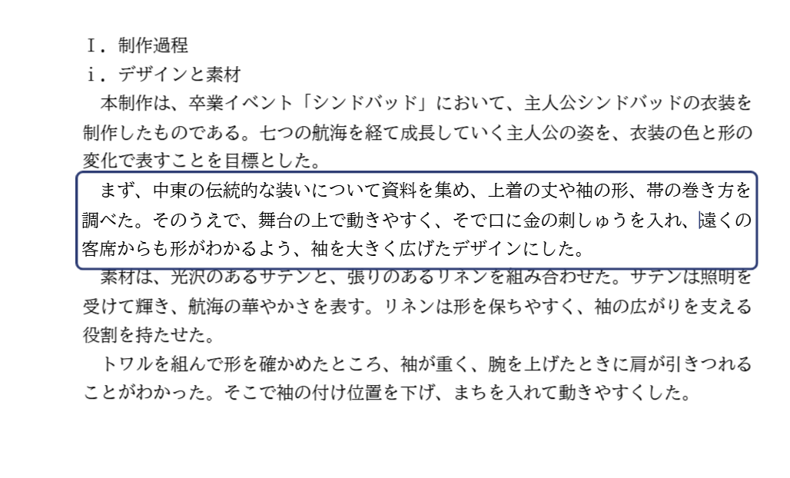
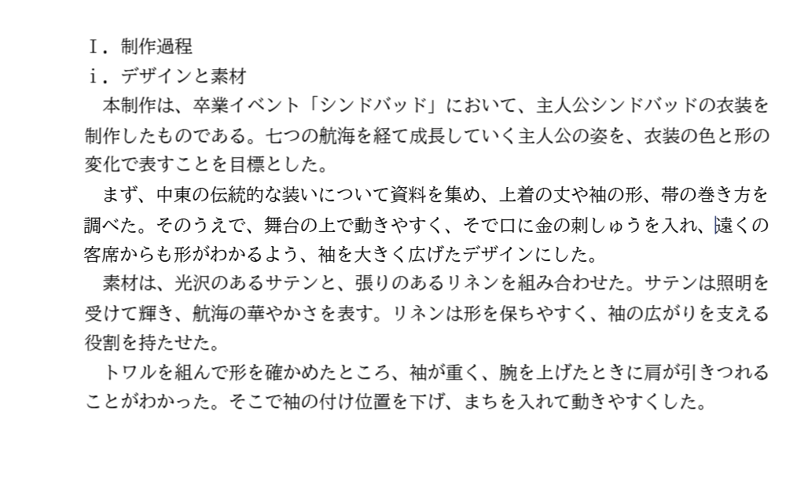
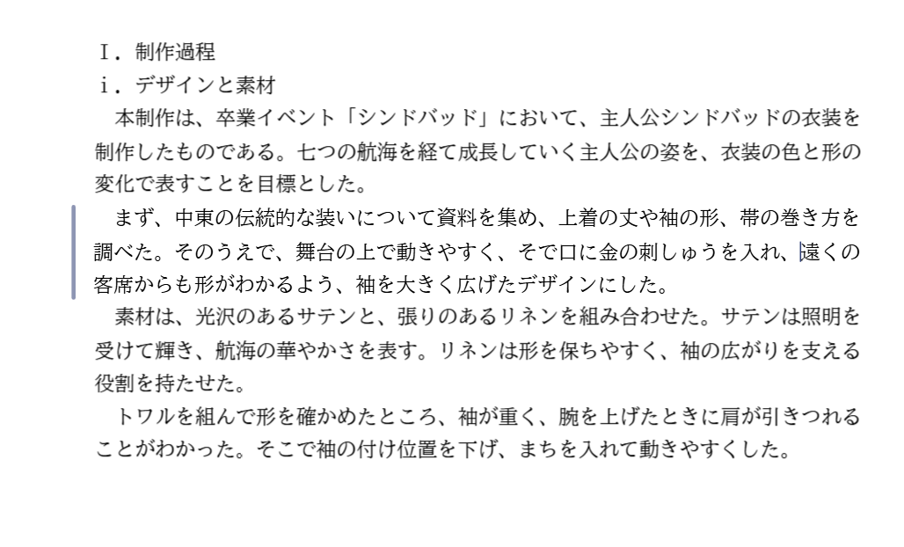
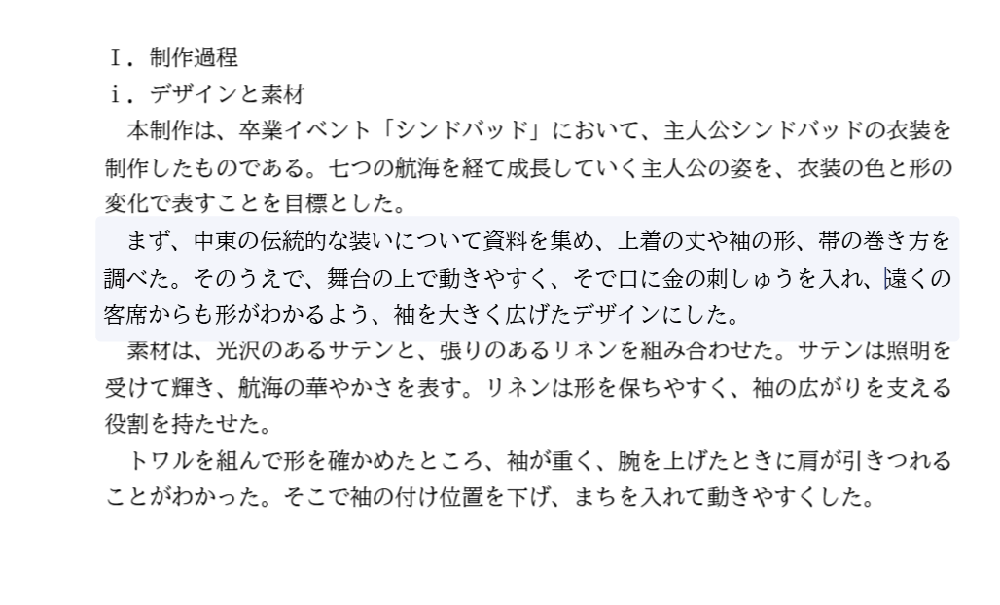

文字を書いているときの見え方（2つ目の段落を書いている途中）
どの案も、書き方（Enter で段落を分ける・↑↓で隣の段落へ移る・先頭の Backspace で前の段落とつなげる）は今と同じです。見え方だけが変わります。
今クリックするたびに、書いている段落が青い枠で囲まれる。枠が次の行に少しかかる
案1 枠なし（Word・Google ドキュメントと同じ）文字のカーソルだけが出る。紙面は何も変わらない
案2 枠なし＋左の余白に細い線書いている段落の左に、うすい線だけを出す。どの段落を書いているかがわかる
案3 枠なし＋ごく薄い色書いている段落を、ほんのり色づける。枠よりも目立たない